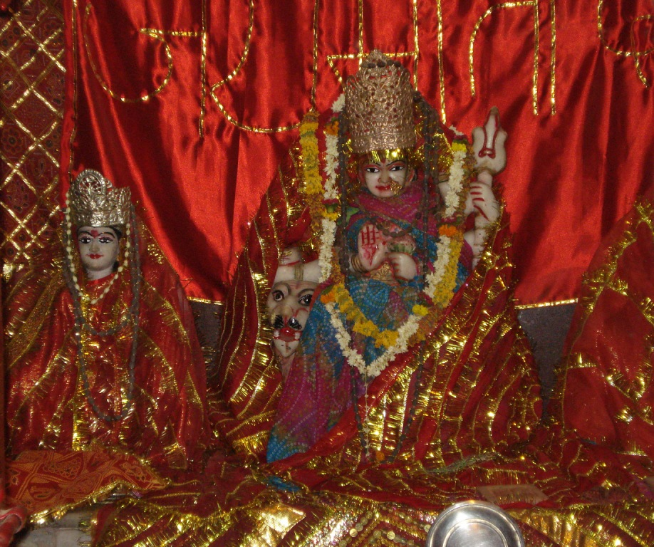
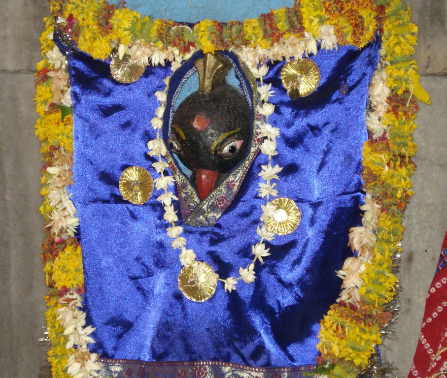

<?xml version="1.0" encoding="UTF-8"?><rss version="2.0"
	xmlns:content="http://purl.org/rss/1.0/modules/content/"
	xmlns:wfw="http://wellformedweb.org/CommentAPI/"
	xmlns:dc="http://purl.org/dc/elements/1.1/"
	xmlns:atom="http://www.w3.org/2005/Atom"
	xmlns:sy="http://purl.org/rss/1.0/modules/syndication/"
	xmlns:slash="http://purl.org/rss/1.0/modules/slash/"
	>

<channel>
	<title>Mahalakshmi Gauri &#8211; Varanasi Temples</title>
	<atom:link href="index.html" rel="self" type="application/rss+xml" />
	<link>../../../../index.html</link>
	<description>Temples of Varanasi as referred to in Kashi Khand</description>
	<lastBuildDate>Thu, 19 Jun 2025 05:16:46 +0000</lastBuildDate>
	<language>en-US</language>
	<sy:updatePeriod>hourly</sy:updatePeriod>
	<sy:updateFrequency>1</sy:updateFrequency>
	<generator>https://wordpress.org/?v=4.6.29</generator>
	<item>
		<title>MAHALAKSHMI GAURI</title>
		<link>../../../../devi-temples/mahalakshmi-gauri/index.html</link>
		<pubDate>Tue, 11 May 2010 10:13:46 +0000</pubDate>
		<dc:creator><![CDATA[admin]]></dc:creator>
				<category><![CDATA[Devi Temples]]></category>
		<category><![CDATA[Mahalakshmi Gauri]]></category>
		<category><![CDATA[9 gauri temples]]></category>
		<category><![CDATA[chandi]]></category>
		<category><![CDATA[chandi devi]]></category>
		<category><![CDATA[gauri devichi nau naave]]></category>
		<category><![CDATA[goori mahalakshmi]]></category>
		<category><![CDATA[kashi kalratri]]></category>
		<category><![CDATA[katyayani mata]]></category>
		<category><![CDATA[lakshmi]]></category>
		<category><![CDATA[lakshmi kund]]></category>
		<category><![CDATA[luxa]]></category>
		<category><![CDATA[luxs]]></category>
		<category><![CDATA[mahalakshmi]]></category>
		<category><![CDATA[mahalakshmi photos]]></category>
		<category><![CDATA[mahalakshmi temple]]></category>
		<category><![CDATA[mangala gauri]]></category>
		<category><![CDATA[navratri]]></category>
		<category><![CDATA[siddheswari kali]]></category>
		<category><![CDATA[varanasi temple]]></category>

		<guid isPermaLink="false">../../../../p=600.html</guid>
		<description><![CDATA[&#160; According to Kashi Khand, Chapter 70, Mahalakshmi is present near Lakshmi Kund. Devotees should take bath in Lakshmi Kund and worship Mahalakshmi.  Devotees have also been advised to perform the rituals for their forefathers and give alms to needy people, whereby they will be blessed by Mahalakshmi. (MAHALAKSHMI GAURI) Kashi Khand states that the [&#8230;]]]></description>
				<content:encoded><![CDATA[<p>&nbsp;</p>
<p>According to Kashi Khand, Chapter 70, Mahalakshmi is present near Lakshmi Kund.</p>
<p>Devotees should take bath in Lakshmi Kund and worship Mahalakshmi.  Devotees have also been advised to perform the rituals for their forefathers and give alms to needy people, whereby they will be blessed by Mahalakshmi.</p>
<p></p>
<p style="text-align: center;"><strong>(MAHALAKSHMI GAURI)</strong></p>
<p>Kashi Khand states that the entire locality is a Shakti Peeth (seat of vital energy). There are many powerful Devis in the area and of all the Shakti Peeths in Kashi, Mahalakshmi Shakti Peeth is the most powerful.</p>
<p>&nbsp;</p>
<p><strong>&#8212;&#8212;&#8212;&#8212;&#8212;&#8212;&#8212;&#8212;&#8212;&#8212;&#8212;&#8212;&#8212;&#8212;&#8212;&#8212;&#8212;&#8212;&#8212;&#8212;&#8212;&#8212;&#8212;&#8212;&#8212;&#8212;&#8212;&#8212;&#8212;&#8212;&#8212;&#8212;&#8212;&#8212;-</strong></p>
<p><strong> </strong></p>
<p><span style="text-decoration: underline;"><strong>Kashi Khand, Chapter 70, Shlok 60</strong></span></p>
<p><strong> </strong></p>
<p><strong>सन्ति पीठान्यनेकानि काश्यां सिद्धिकराण्यपि </strong></p>
<p><strong>महालक्ष्मीपीठसमं नान्यल्लक्ष्मीकरं परम्</strong></p>
<p>&nbsp;</p>
<p><strong>Although there are many Peethas in Kashipuri that give accomplishment (attainment), but there is no one else who is capable of giving ultimate prosperity  like Mahalakshmi-peet. </strong></p>
<p><strong> </strong></p>
<p><strong>&#8212;&#8212;&#8212;&#8212;&#8212;&#8212;&#8212;&#8212;&#8212;&#8212;&#8212;&#8212;&#8212;&#8212;&#8212;&#8212;&#8212;&#8212;&#8212;&#8212;&#8212;&#8212;&#8212;&#8212;&#8212;&#8212;&#8212;&#8212;&#8212;&#8212;&#8212;&#8212;&#8212;&#8212;&#8212;</strong></p>
<p>&nbsp;</p>
<p>Devotees who worship Mahalakshmi regularly will attain all kinds of Siddhi (divine powers) and achievements. Mahalakshmi will always reside in their homes. (Here Mahalakshmi is symbolic of wealth and prosperity).</p>
<p>Further, in Chapter 100, Kashi Khand has prescribed Nau Gauri Yatra (religious pilgrimage of nine Gauris) and Mahalakshmi is the ninth Gauri.</p>
<p><strong><span style="text-decoration: underline;">LOCATION OF MAHALAKSHMI GAURI</span></strong></p>
<p>Mahalakshmi is located at D.52/40, Lakshmi Kund. This temple and the locality (Lakshmi Kund) are quite famous and people can approach this place through Luxa by rickshaw.</p>
<p></p>
<p style="text-align: center;"><strong>(SHIKHI CHANDI)</strong></p>
<p></p>
<p style="text-align: center;"><strong>(MAYURI DEVI)</strong></p>
<p>Further Shikhi Chandi Devi (Kashi Khand, Chapter 70), in the back side of  the premises and Mayuri (Chapter 45) on the entrance to the right side are two other Devis which have been mentioned and are present in Mahalakshmi temple.  Devotees may worship these Devis also as they are very powerful.</p>
<p>The temple also houses Ugreshwar Ling which finds mention in Kashi Khand.</p>
<p>There is heavy rush during Fridays and on Navratri days (March-April). While devotees throng this temple on Chaitra Navratri (March-April) on the 9<sup>th</sup> day, there is generally a huge crowd on practically all days of both Navratris.</p>
<h3></h3>
<p><strong>Please watch our YouTube Video about Mahalakshmi Gauri at following Link </strong></p>
<h3></h3>
<p><a href="https://www.youtube.com/watch?v=3vw_Rptu-BE&amp;t=61s">https://www.youtube.com/watch?v=3vw_Rptu-BE&amp;t=61s</a></p>
<h3></h3>
<h3>TYPES OF POOJA</h3>
<p>The temple is open from 06.00 a.m. to 01.00 p.m. and from 05.00 p.m. to 10.00 p.m.  Aarties are performed in the morning and evening.</p>
]]></content:encoded>
			</item>
	</channel>
</rss>
